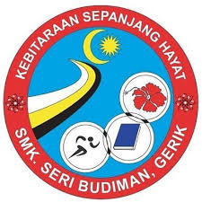
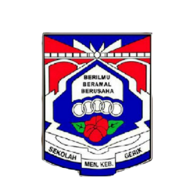

Education
| Bachelor's Degree | |
|---|---|

|
Programme: Bachelor of Information Science (Hons.) Library Management Institution: Universiti Teknologi MARA Kedah Branch (UiTM) Year: 2023 – Current CGPA: 3.24 (Current) Highlights:
|
| Malaysian Higher School Certificate (STPM) | |
|---|---|
|  |
School: Sekolah Menengah Kebangsaan Seri Budiman Year: 2021 - 2023 CGPA: 2.83 Highlights:
|
| Malaysian Certificate of Education (SPM) | |
|---|---|
|  |
School: Sekolah Menengah Kebangsaan Gerik Year: 2016 – 2020 SPM Result: 1A 2A- 2B+ 1B 1C+ 1C Highlights:
|